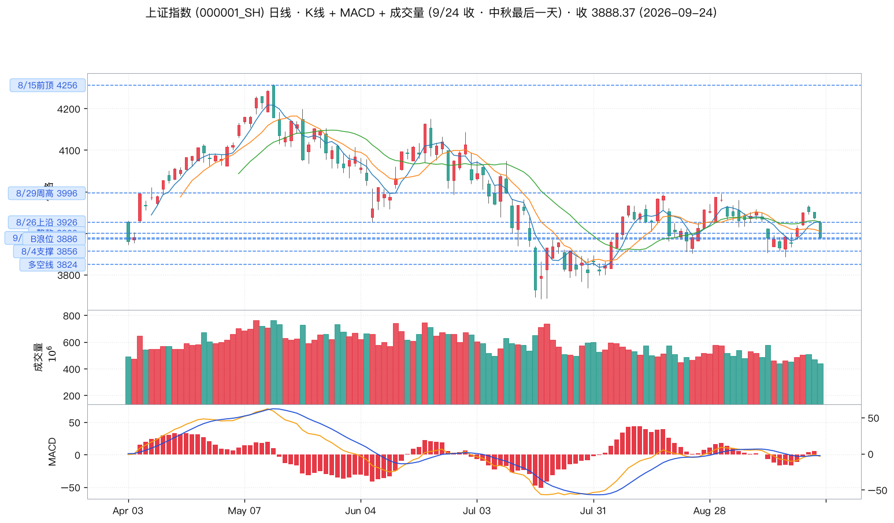
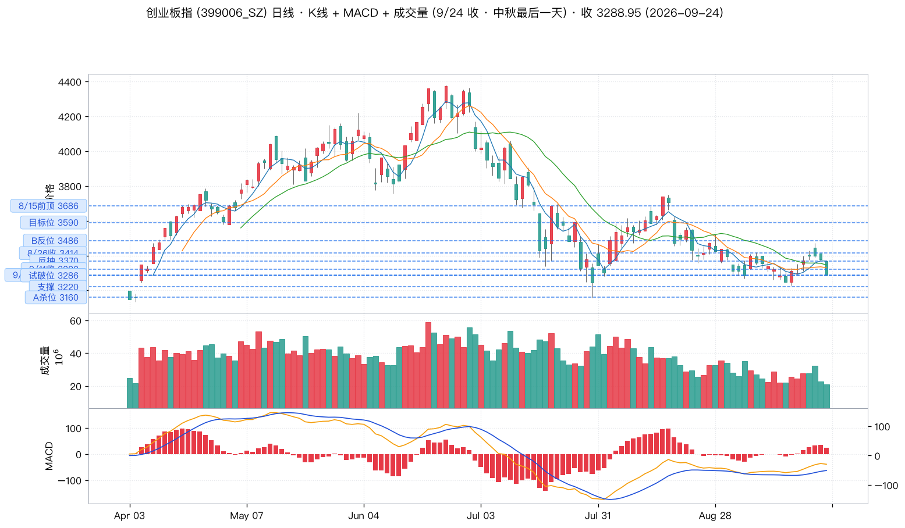
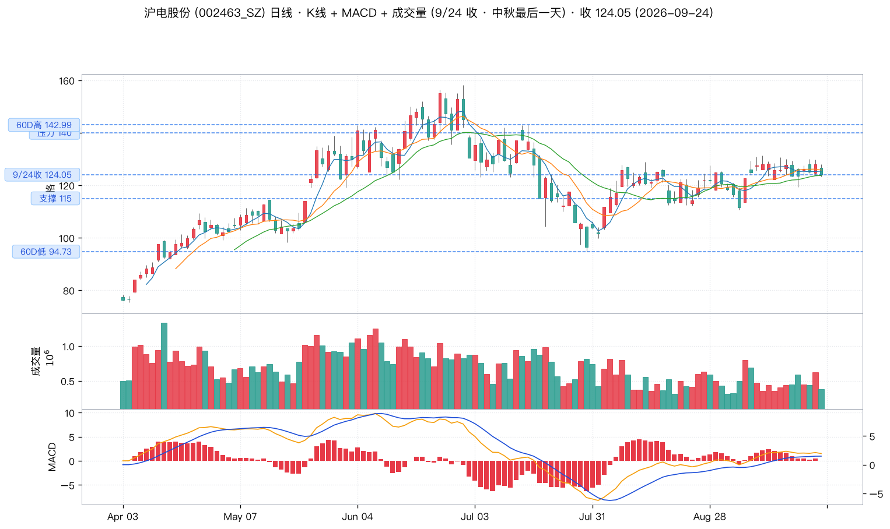
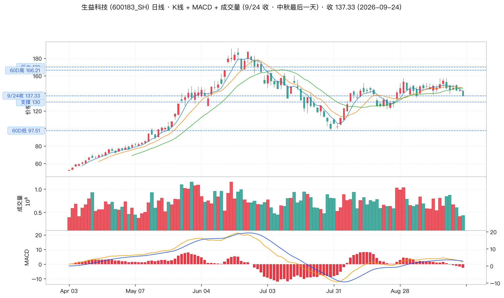
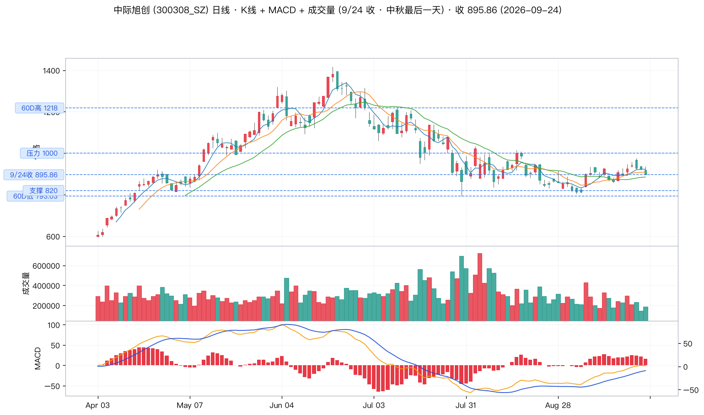
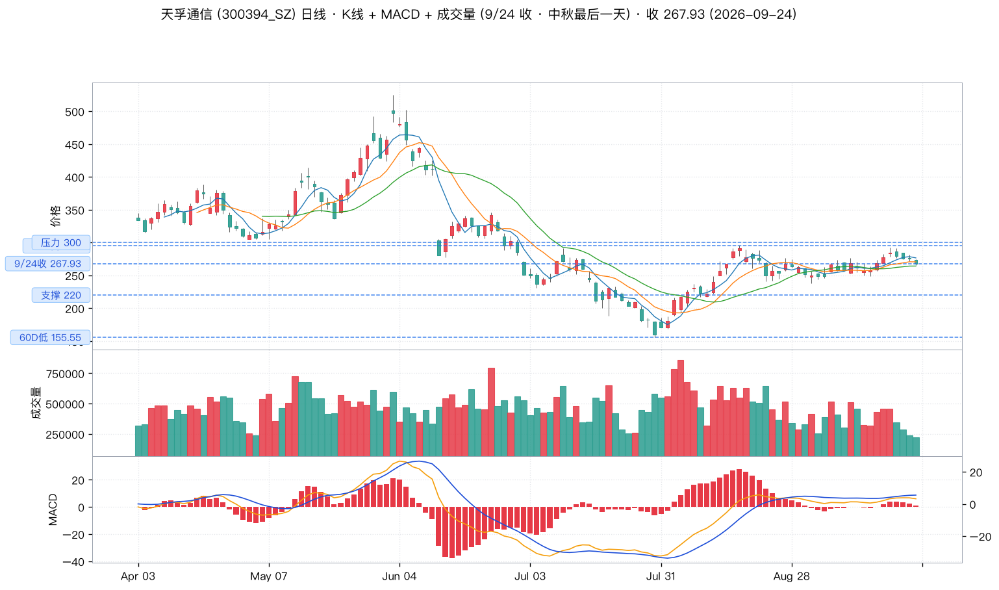
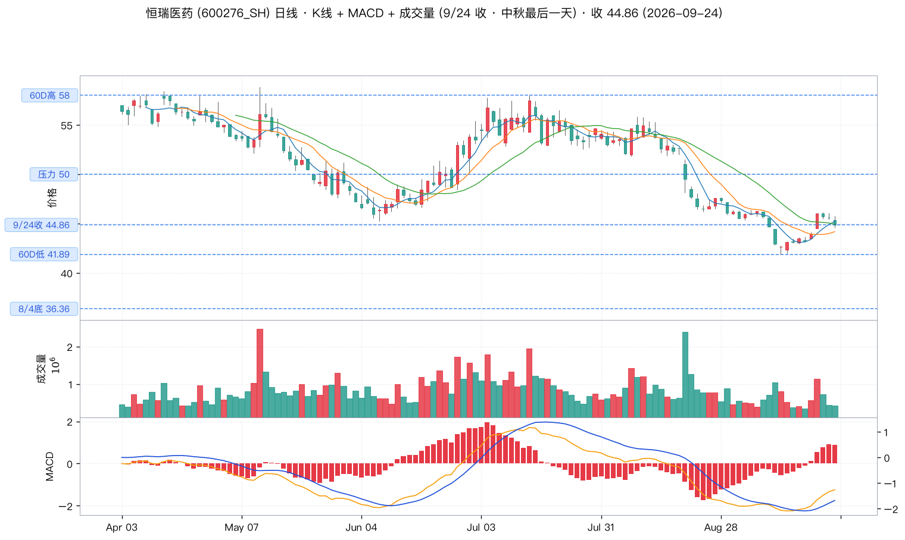
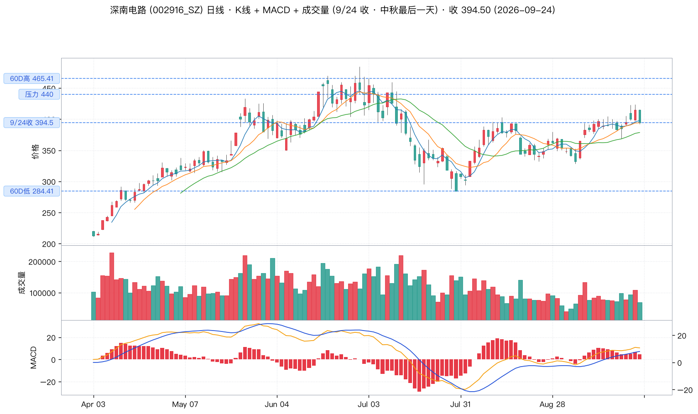

📈 wu2198 投资观点日报 · 2026-09-27
📅 2026-09-27 (周日 21:00 · 中秋节最后一天)
🏛️ 沪指(9/24 收) 3888.37 (-1.22%)
📊 数据源:weibo-watcher + tushare
🎯 最近交易日:2026-09-24 (周三 · 节前最后交易日)
🌕 A 股:9/25-9/27 中秋休市 · 9/28 周一恢复
⚪博主最近一天核心立场:
中性偏空 · 沿用 8/4 关键位体系。
最近 24 小时 0 条操盘贴 (博主中秋节+周末持续休息,10 条微博全部为节日祝福/社会新闻/体育新闻/晚安);
数据截止 9/24 节前最后交易日,
关键位印证:大盘 3888.37 失守 B 浪位 3886,
创业板 3288.95 跌穿试破位 3286,
博主 8/4 'B 反结构'判断需要重估。
🟢 9/28 节后开盘是检验 AI 算力/光模块/创新药主线成色的关键窗口。
📊 核心数据卡片
博主核心立场
⚪ 中性偏空
0 条新贴 · 沿用 8/4 体系
沪指 9/24 收
3888.37 (-1.22%)
失守 B 浪位 3886 距 3856 仅 32 点
创业板 9/24 收
3288.95
-2.68% 跌穿试破位 3286 距 3160 仅 129 点
最近交易日
9/24 (周三)
9/25-9/27 中秋休市
抓取微博
10 条
过滤 2 置顶 · 全部节日祝福
📋 完整微博列表(10 条,按时间倒序)
| # |
时间 |
方向 |
信号 / 话题 |
内容摘要 |
互动(转/评/赞) |
综合分 |
| 1 |
09-27 20:59 |
⚪ |
—
无关 |
宝，今晚磨指甲么？ |
0 / 17 / 58 |
92 |
| 2 |
09-27 19:35 |
⚪ |
—
国际政治 |
#菲方趁中方节日期间挑衅#应该打一顿,不能惯着「逢节必闹」的老毛病! |
3 / 61 / 1124 |
1,249 |
| 3 |
09-27 19:34 |
⚪ |
—
体育新闻 |
#国乒男双战胜日本#加油👏! |
2 / 33 / 844 |
912 |
| 4 |
09-27 16:37 |
⚪ |
—
社会新闻 |
#豆包回答70岁前去世占比# |
3 / 72 / 1531 |
1,678 |
| 5 |
09-27 11:54 |
⚪ |
—
节日祝福 |
今年是 15 的月亮 17 才最圆的![思考] |
13 / 231 / 3237 |
3,712 |
| 6 |
09-27 08:51 |
⚪ |
—
问候/鸡汤 |
早安,老铁们……胸中若有阳光住,满目晴和便是安。日子难免有阴有晴,心态好,处处是春天。改变不了天气,可以改变心情。愿我们眼里有光,心中有暖,笑对余生每一天! |
38 / 474 / 5130 |
6,116 |
| 7 |
09-27 08:09 |
⚪ |
—
国际政治 |
#中美八点成果共识公布#合作才能共赢! |
12 / 174 / 3415 |
3,775 |
| 8 |
09-27 08:07 |
⚪ |
—
体育新闻 |
#王楚钦感谢孙颖莎一起守住了混双金牌#加油! |
6 / 129 / 2527 |
2,791 |
| 9 |
09-26 20:48 |
⚪ |
—
体育新闻 |
#乒乓球混双决赛#你看了么? |
3 / 251 / 3242 |
3,747 |
| 10 |
09-26 20:07 |
⚪ |
—
节日祝福 |
西大的月饼,久违了! |
7 / 258 / 3930 |
4,453 |
🚦 核心操盘信号(LLM 二次摘要)
⚪ 信号 0 — 最近 24 小时 0 条操盘贴 (中秋节最后一天 + 周日)
博主 9/24(中秋节前最后交易日)17:41 转发 "反弹几天,就忘记了本质!" 之后,9/26-9/27 共 2 天 10 条微博全部为节日祝福/社会新闻/体育新闻/晚安/鸡汤,0 条操盘贴。
- 9/27 20:59「宝,今晚磨指甲么?」— 58 赞
- 9/27 19:35「#菲方趁中方节日期间挑衅#应该打一顿,不能惯着『逢节必闹』的老毛病!」— 1124 赞
- 9/27 19:34「#国乒男双战胜日本#加油👏!」— 844 赞
- 9/27 16:37「#豆包回答70岁前去世占比#」— 1531 赞
- 9/27 11:54「今年是 15 的月亮 17 才最圆的!」— 3237 赞(中秋节感悟)
- 9/27 08:51「早安,老铁们……胸中若有阳光住,满目晴和便是安。」— 5130 赞(互动最高)
- 9/27 08:09「#中美八点成果共识公布#合作才能共赢!」— 3415 赞(中美关系)
- 9/27 08:07「#王楚钦感谢孙颖莎一起守住了混双金牌#加油!」— 2527 赞
LLM 解读:博主中秋节+周日持续休息,0 条操盘贴。9/24 17:41 「反弹几天就忘记了本质」仍是博主最新一个隐含看空信号。9/28 节后开盘是检验博主是否复盘+发新观点的关键(中性偏空 置信度 中,样本极少)。
📉 9/24 节前最后交易日 关键位印证
🔴 大盘 沪指 3888.37 -1.22%
关键位印证:9/24 收 3888.37(跌 1.22%),已失守博主 8/4 'B 浪位' 3886(跌穿 2.37 点)。
- 距博主 8/4 关键支撑 3856 仅 32 点(再跌 0.82% 即失守)
- 距 8/4 关键位 3824 (多空线) 64 点
- 距 8/4 关键位 3767 (8/4 底) 121 点
- 距 8/14 B 反起 3741 147 点
结论:博主 8/4 'B 反结构'判断需要重估 — B 浪位 3886 已失守,关键支撑 3856 岌岌可危。
🔴 创业板 3288.95 -2.68%
关键位印证:9/24 收 3288.95(跌 2.68%),已跌穿博主 8/4 '试破不收破'位 3286(跌穿 2.95 点)。
- 距博主 8/4 'A 杀完成位' 3160 仅 129 点(再跌 3.9% 即触及)
- MA20 3430.98 / MA50 3532.61 / MA60 3647.62 全部失守
- 距 8/4 关键位 3220 (支撑) 69 点
结论:博主 8/4 给出 3286 '试破不收破'判断,9/24 直接跌穿 — 创业板是 9/24 最弱指数,博主'第四大浪未完'判断被强化。
💼 3 大板块 + 6 支个股
🟢 PCB / 覆铜板(博主 8/4 关注方向)
博主 8/4 当日连发 2 条关键速报:'覆铜板、电子布冲板了' + 'CPO、光纤有冲板效应',奠定 9 月以来 AI 算力产业链的主线地位。9/24 节前最后交易日两大龙头全部下跌(沪电 -3.16% / 生益 -4.34% / 深南 -4.89%),但这是节前资金避险情绪而非基本面恶化(AI 服务器/光通信/CPO 中期逻辑未变)。9/28 节后开盘是检验主线成色的关键窗口。
🟡 沪电股份 (002463.SZ) · 9/24 收 124.05 -3.16%
AI 服务器 PCB 全球龙头,博主 8/4 'PCB 板块冲板效应'直接对应品种。9/24 节前跌 3.16% 收 124.05,股价从 60D 高 142.99 回调至 60D 低 94.73 上方 124 一线,处于中枢震荡下沿。AI 服务器主板高多层 PCB/Mini-LED IC 载板三方向需求景气,中期逻辑未变。
关键位:60D低 94.73 / 支撑 115 / 9/24收 124.05 / 压力 140 / 60D高 142.99
🟡 生益科技 (600183.SH) · 9/24 收 137.33 -4.34%
覆铜板(CCL)全球第二大/国内龙头,博主 8/4 直接点名'覆铜板、电子布冲板了'。9/24 节前跌 4.34% 收 137.33,股价从 60D 高 166.21 回调至 60D 低 97.51 上方 137 一线。高速 CCL(M6/M7/M8)用于 800G/1.6T 光模块/AI 服务器,景气周期延续。
关键位:60D低 97.51 / 支撑 130 / 9/24收 137.33 / 压力 170 / 60D高 166.21
🟢 光模块 / CPO(博主 8/4 关注方向)
博主 8/4 'CPO、光纤有冲板效应' + 8/14 转发英伟达 200G/lane Spectrum-6 ASIC 102.4Tb/s 量产 + 9/2 14:05 '算力租赁龙头 12 日 87.26→137.50'(=利通电子 603629)三剑客涨停潮,共同构成光模块/CPO 主线的多头逻辑。9/24 节前中际旭创 -2.89% / 天孚通信 -2.71% 同步走弱,但板块中期景气未变(1.6T 光模块/800G/AI 算力)。
🟡 中际旭创 (300308.SZ) · 9/24 收 895.86 -2.89%
1.6T 光模块全球龙头,博主 8/14 转发英伟达 200G/lane 量产 + 8/22 业绩 +241% 验证。9/24 节前跌 2.89% 收 895.86,股价从 60D 高 1218.00 回调至 60D 低 793.03 上方 895 一线。距 60D 低 793 仅 102 元(11%),是 CPO 主线中基本面最强、估值合理的核心标的。
关键位:60D低 793.03 / 支撑 820 / 9/24收 895.86 / 压力 1000 / 60D高 1218.00
🟡 天孚通信 (300394.SZ) · 9/24 收 267.93 -2.71%
光器件平台型公司(无源+有源+封装),中际旭创核心供应商。9/24 节前跌 2.71% 收 267.93,与中际旭创同步走弱,体现光模块产业链共振。60D 高 295 / 60D 低 155.55,股价回调至 267 一线接近支撑区。
关键位:60D低 155.55 / 支撑 220 / 9/24收 267.93 / 60D高 295 / 压力 300
🟢 创新药(博主 8/4 关注方向)
博主 8/4 18:46 '创新药龙头涨停 36.36 元'(=恒瑞医药 600276) + 8/27 转发风华高科 +74% 业绩 + 8/31 博主长期持有优质银行股。每年拿分红更划算(5722 赞),共同构成'业绩兑现 + 防御红利'双逻辑。9/24 节前恒瑞跌 1.58% 收 44.86(8/4 涨停价 36.36 上方 +23%),深南电路跌 4.89% 收 394.50。
🟡 恒瑞医药 (600276.SH) · 9/24 收 44.86 -1.58%
创新药出海标杆(PD-1/ADC 双轮驱动),博主 8/4 18:46 '创新药龙头涨停 36.36 元'直接对应品种。9/24 节前跌 1.58% 收 44.86,从 8/4 低 36.36 反弹至 44.86(+23.4%),趋势延续。出海逻辑+集采压力缓解+多款新药放量,中期逻辑清晰。
关键位:8/4底 36.36 / 60D低 41.89 / 9/24收 44.86 / 压力 50 / 60D高 58
🟡 深南电路 (002916.SZ) · 9/24 收 394.50 -4.89%
PCB + 封装基板(国产替代)双轮,博主 8/4 'PCB 冲板效应'关注方向。9/24 节前跌 4.89% 收 394.50,是8 个观察标的中跌幅最大。封装基板(ABF/BT)用于 CPU/GPU/AI 芯片,IC 载板国产替代加速,中期景气未变。
关键位:60D低 284.41 / 9/24收 394.50 / 压力 440 / 60D高 465.41
📉 K 线图(关键位居左虚线标注)
1. 上证指数 (000001.SH) · 9/24 收 3888.37 (-1.22%)

沪指 8 个关键位(沿用博主 8/4 体系):4256(8/15 前顶)/ 3996(8/29 周高)/ 3926(8/26 上沿)/ 3900(整数)/ 3888.37(9/24 收)/ 3886(B 浪位)/ 3856(8/4 支撑)/ 3824(多空线)。9/24 收盘 3888.37 已失守 B 浪位 3886(跌穿 2.37 点),距关键支撑 3856 仅 32 点。
2. 创业板指 (399006.SZ) · 9/24 收 3288.95 (-2.68%)

创业板 9 个关键位(沿用博主 8/4 体系):3686(8/15 前顶)/ 3590(目标位)/ 3486(B 反位)/ 3370(反抽)/ 3322(9/11 收)/ 3288.95(9/24 收)/ 3286(试破位)/ 3220(支撑)/ 3160(A 杀位)。9/24 收盘 3288.95 已跌穿试破位 3286(跌穿 2.95 点),距 A 杀位 3160 仅 129 点 — 创业板是 9/24 最弱指数。
3. 🟡 沪电股份 (002463.SZ) · AI PCB 龙头 · 9/24 收 124.05 (-3.16%)

博主 8/4 'PCB 板块冲板效应'直接对应品种。5 个关键位:60D低 94.73 / 支撑 115 / 9/24 收 124.05 / 压力 140 / 60D高 142.99(60D 高已下移,前期高点 158 已被消化)。
4. 🟡 生益科技 (600183.SH) · 覆铜板龙头 · 9/24 收 137.33 (-4.34%)

博主 8/4 直接点名'覆铜板、电子布冲板了'。5 个关键位:60D低 97.51 / 支撑 130 / 9/24 收 137.33 / 压力 170 / 60D高 166.21(60D 高已下移,前期高点 192 已被消化)。
5. 🟡 中际旭创 (300308.SZ) · 1.6T 光模块龙头 · 9/24 收 895.86 (-2.89%)

博主 8/14 转发英伟达 200G/lane 量产 + 8/22 业绩 +241%。5 个关键位:60D低 793.03 / 支撑 820 / 9/24 收 895.86 / 压力 1000 / 60D高 1218(60D 高已下移,前期高点 1382 已被消化)。
6. 🟡 天孚通信 (300394.SZ) · 光器件平台型 · 9/24 收 267.93 (-2.71%)

光器件平台型公司,中际旭创核心供应商。5 个关键位:60D低 155.55 / 支撑 220 / 9/24 收 267.93 / 60D高 295 / 压力 300(60D 高已下移,前期高点 395 已被消化)。
7. 🟡 恒瑞医药 (600276.SH) · 创新药出海标杆 · 9/24 收 44.86 (-1.58%)

博主 8/4 18:46 '创新药龙头涨停 36.36 元'直接对应品种。5 个关键位:8/4底 36.36 / 60D低 41.89 / 9/24 收 44.86 / 压力 50 / 60D高 58。
8. 🟡 深南电路 (002916.SZ) · PCB/封装基板 · 9/24 收 394.50 (-4.89%)

博主 8/4 'PCB 冲板效应'关注方向。4 个关键位:60D低 284.41 / 9/24 收 394.50 / 压力 440 / 60D高 465.41。9/24 节前 8 个观察标的中跌幅最大 (-4.89%)。
⚠️ 风险提示
- ⚠️ 博主 9/24-9/27 中秋节+周末持续休息,12 条微博全部为节日祝福/社会新闻/体育新闻/晚安,0 条操盘贴 — 9/28 节后开盘博主是否发新观点是关键
- 🔴 大盘 3888.37 已失守博主 8/4 'B 浪位' 3886 (跌穿 2.37 点),距博主 8/4 关键支撑 3856 仅 32 点 — 第四大浪 ABC 调整结构未完立场得到市场印证
- 🔴 创业板 3288.95 已跌穿博主 8/4 '试破不收破'位 3286 (跌穿 2.95 点),距博主 8/4 'A 杀完成位' 3160 仅 129 点 — B 反失败风险加大
- ⚠️ 博主 8/4 关键位体系部分失效:大盘 3886 失守 / 创业板 3286 失守,需重新评估博主'B 反结构明朗'判断
- ⚠️ 9/24 节前 8 个观察标的 6 个跌幅超 2%,深南电路 -4.89% 最大,生益科技 -4.34% 次之,沪电股份 -3.16% 第三 — 节前避险情绪集中
- ⚠️ 博主 6/8 撤离本金+去年盈利一半,预测偏多但实际行动防御 — 实际比预测更看空
- ⚠️ 博主长期风控底线:不举债/不杠杆/只用闲钱/无技术不参与短线
- ⚠️ 9/25-9/27 中秋节 A 股休市,9/28 周一恢复交易 — 节后首日开盘表现是验证主线的关键
- 🟢 9/28 节后开盘是检验 AI 算力/光模块/创新药三大主线成色的关键窗口 — 60D 高已下移(沪电 158→143 / 生益 192→166 / 中际 1382→1218 / 天孚 395→295),意味着前期高点已被消化,中期买点出现
🎯 操作建议汇总
📌 大盘
短期(节后 1-2 周):🟡 中性偏空。9/24 节前最后交易日大盘 3888 已失守博主 8/4 B 浪位 3886,距关键支撑 3856 仅 32 点。9/28 节后开盘是关键窗口 —
- 乐观情景:9/28 反弹收复 3886,重回 3900-3926 区间震荡,板块快速轮动(沿用 9/4 防御 + 9/11 进攻组合)
- 悲观情景:9/28 跌破 3856,触发博主 8/4 '关键支撑'破位,下看 3824 多空线 → 3767 8/4 底 → 3741 B 反起
- 创业板 3286 已跌穿:距 A 杀位 3160 仅 129 点 — 创业板是节后最弱环节,警惕
📌 板块策略
- 🟢 中线布局(节后回调买入):PCB/覆铜板 + 光模块/CPO + 创新药 — 博主 8/4 关注方向 + AI 算力/创新药中期逻辑未变。9/24 节前避险情绪集中释放后,9/28-30 是分批建仓窗口。60D 高已显著下移(沪电 158→143 / 生益 192→166 / 中际 1382→1218 / 天孚 395→295),意味着前期高点已被消化,中期买点出现。
- 🟡 短期防御:银行/红利 — 博主 8/31 '长期持有优质银行股,每年拿分红更划算' (5722 赞) 持续底仓逻辑。在主线回调时银行股是抗跌品种。
- ⚠️ 规避:高位消费白马 — 博主 8/15 警示白酒/贵州茅台的逻辑仍未解除,'中央汇金证金集体清仓贵州茅台' 警示消费白马。
📌 关键位监控(节后 9/28 开盘首日)
| 标的 | 支撑位 | 9/24 收 | 压力位 | 60D高 | 监控动作 |
|---|
| 沪指 | 3856 / 3824 | 3888.37 | 3900 / 3926 | — | 收复 3886 → 偏多;失守 3856 → 减仓 |
| 创业板 | 3220 / 3160 | 3288.95 | 3370 / 3486 | — | 收复 3286 → 偏多;失守 3220 → 警示 A 杀 |
| 沪电股份 | 115 / 94.73 | 124.05 | 140 | 142.99 | 回踩 115 加仓;反弹 140 减仓 |
| 生益科技 | 130 / 97.51 | 137.33 | 170 | 166.21 | 回踩 130 加仓;反弹 170 减仓 |
| 中际旭创 | 820 / 793 | 895.86 | 1000 | 1218.00 | 触 793 加仓(博主 9/4 已触底反弹) |
| 天孚通信 | 220 / 155.55 | 267.93 | 300 | 295.00 | 回踩 220 加仓;反弹 300 减仓 |
| 恒瑞医药 | 36.36 (8/4底) | 44.86 | 50 | 58.00 | 持有不操作;回踩 40 加仓 |
| 深南电路 | 284.41 | 394.50 | 440 | 465.41 | 9/24 节前跌幅最大 -4.89% — 回踩 350 加仓 |